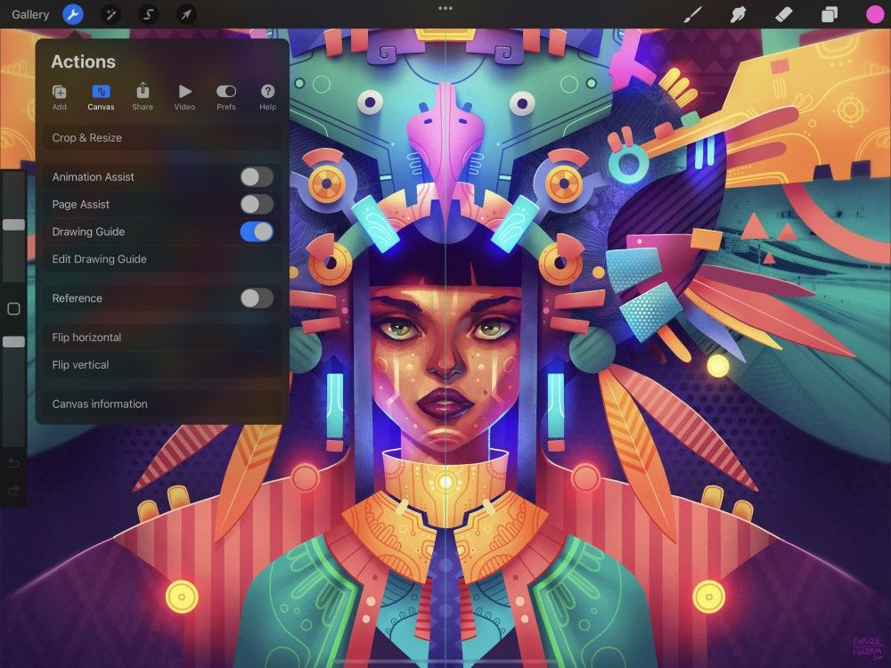
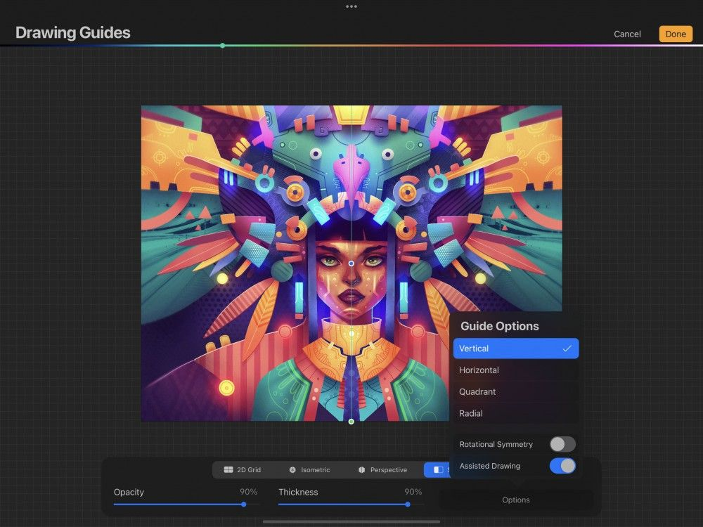
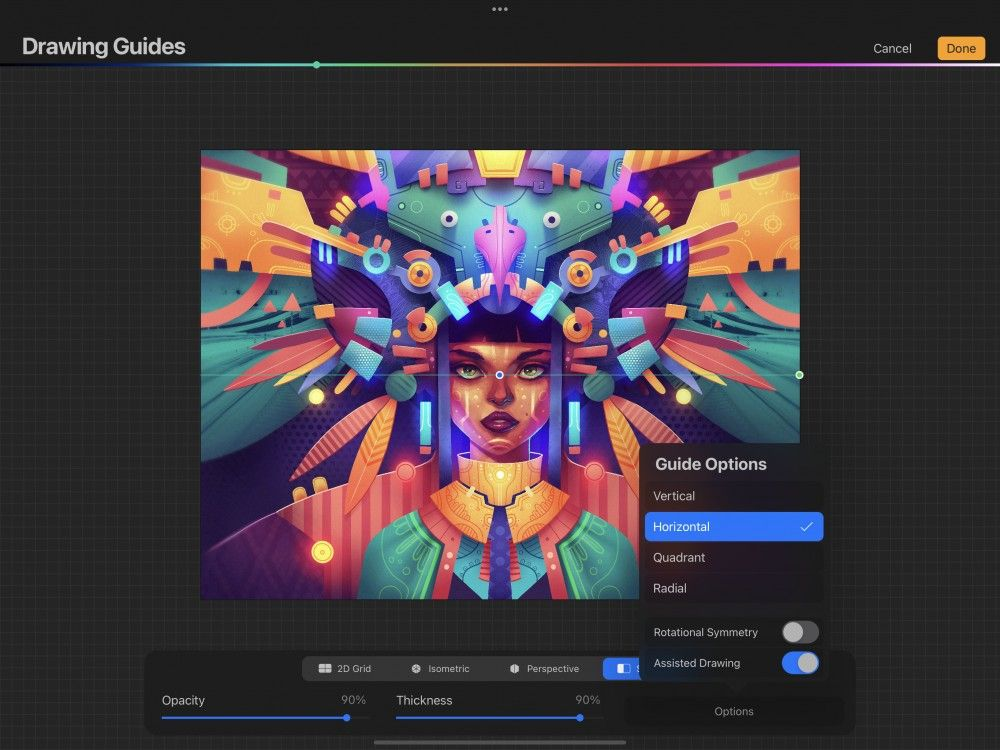
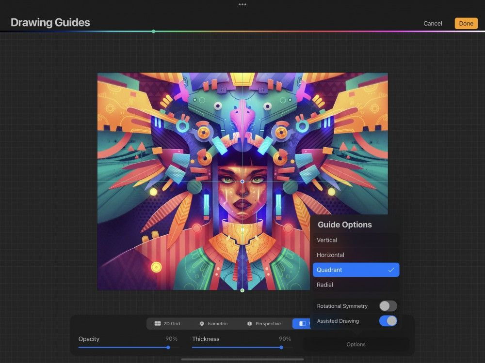
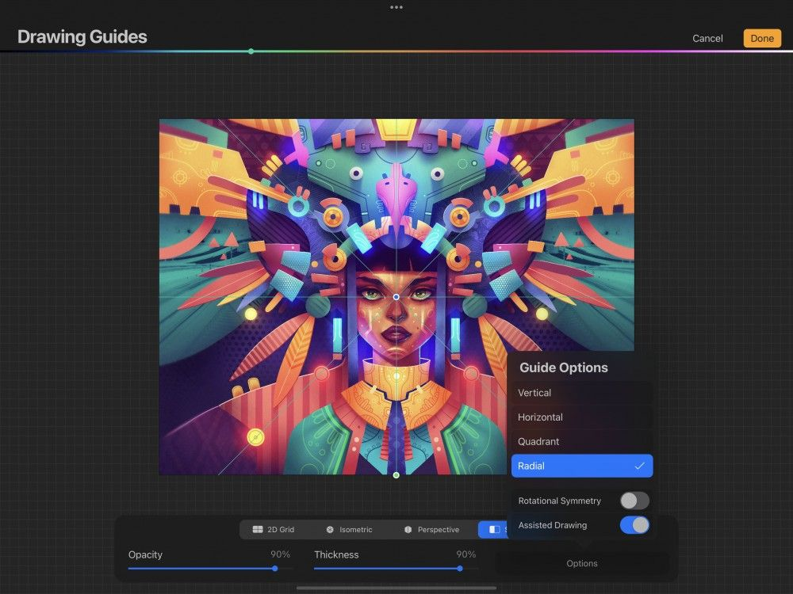

📖 Đã dịch sang tiếng Việt. Thuật ngữ chuyên môn giữ tiếng Anh — rê chuột để xem nghĩa (tooltip).
Symmetry Guide
Đường dẫn đối xứng (Symmetry) phản chiếu tác phẩm của bạn qua nhiều mặt phẳng để tạo hiệu ứng kỳ ảo.
Tùy chỉnh
Thiết lập và điều chỉnh đường dẫn Symmetry của bạn.


Trong Actions → Canvas, chạm Edit Drawing Guide (chỉnh sửa đường dẫn). Thao tác này sẽ đưa bạn đến màn hình Drawing Guides.
Chạm nút Symmetry ở dưới cùng màn hình.
Khi bạn mới mở Symmetry, đường dẫn đối xứng dọc (Vertical Symmetry) được hiển thị mặc định.
Đường dẫn Symmetry xuất hiện dưới dạng các đường mỏng phủ lên tác phẩm. Bạn có thể điều chỉnh hình thức và hành vi của đường dẫn bằng các tùy chọn sau.
Vị trí và độ xoay
Kéo hai nút để điều chỉnh vị trí chính xác của các đường lưới.
Nút màu xanh lam
Nút vị trí màu xanh lam di chuyển toàn bộ lưới trên khung vẽ.
Nút màu xanh lá
Nút xoay màu xanh lá xoay các đường lưới.
Để đặt lại lưới về vị trí mặc định, hãy chạm một trong các nút, sau đó chạm Reset (đặt lại).
Đối xứng dọc
Chế độ này đặt một đường dẫn theo phương dọc ở giữa khung vẽ. Bất cứ thứ gì bạn vẽ ở một bên khung vẽ sẽ được sao chép theo thời gian thực ở bên kia.
Bạn có thể di chuyển và xoay đường dẫn này để tạo kết quả phản chiếu theo một góc.

Đối xứng ngang
Chế độ này đặt một đường dẫn theo phương ngang qua giữa khung vẽ. Bất cứ thứ gì bạn vẽ ở nửa trên khung vẽ sẽ được sao chép theo thời gian thực ở nửa dưới, và ngược lại.
Bạn có thể di chuyển và xoay đường dẫn này để tạo kết quả phản chiếu theo một góc.

Đối xứng bốn phần (góc phần tư)
Chế độ này chia khung vẽ thành bốn phần bằng cả một đường dẫn ngang và một đường dẫn dọc. Bất cứ thứ gì bạn vẽ trong một góc phần tư sẽ được sao chép theo thời gian thực ở tất cả các góc còn lại.

Đối xứng tròn (hướng tâm)
Chế độ này chia khung vẽ thành tám phần bằng các đường dẫn ngang, dọc và chéo. Bất cứ thứ gì bạn vẽ trong một phần sẽ được sao chép theo thời gian thực ở tất cả các phần khác.

Đối xứng phản chiếu và Đối xứng xoay
Theo mặc định, đường dẫn Symmetry mới dùng Mirror Symmetry (đối xứng phản chiếu): chúng phản chiếu (và lật) nét vẽ qua đường dẫn.
Trong chế độ Rotational Symmetry (đối xứng xoay), nét vẽ của bạn được phản chiếu và xoay. Về bản chất, bản sao bị lật cả theo chiều ngang lẫn chiều dọc cùng lúc.
Thử nghiệm để thấy sự khác biệt của hiệu ứng. Chạm công tắc Rotational Symmetry để chuyển đổi giữa hai hành vi.
Hiển thị của Drawing Guide
Điều chỉnh màu của các đường dẫn bằng thanh sắc màu ở trên cùng màn hình Drawing Guides.
Điều chỉnh độ trong suốt của các đường dẫn từ vô hình đến đục đặc.
Độ dày
Điều chỉnh độ dày của các đường dẫn từ vô hình đến dễ thấy.
Drawing Assist (trợ giúp vẽ)
Drawing Assist tự động điều chỉnh nét vẽ khớp với hướng của các đường dẫn. Trong chế độ Symmetry, Drawing Assist được bật mặc định.
Hủy hoặc Lưu
Để quay lại khung vẽ mà không thay đổi gì, hãy chạm Cancel (hủy).
Để lưu các thay đổi, hãy chạm Done (xong).
Still have questions?
If you didn't find what you're looking for, explore our video resources on YouTube or contact us directly. We’re always happy to help.